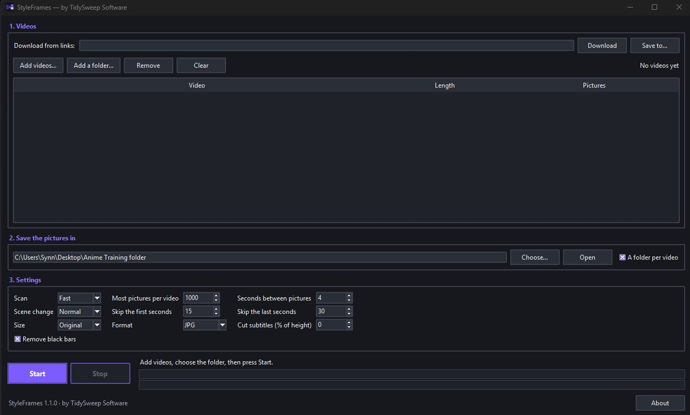
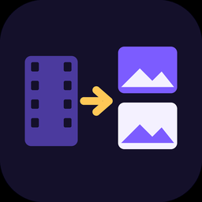
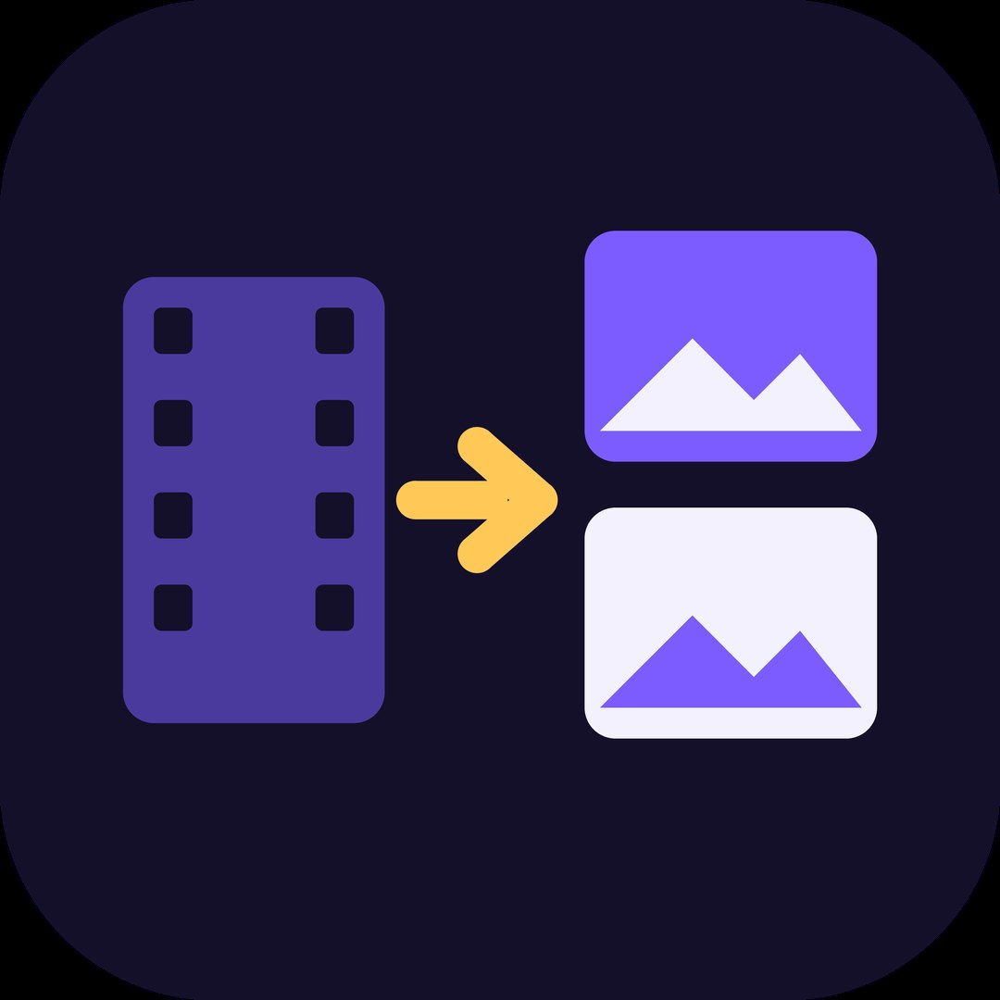

Pausing a video hundreds of times to take screenshots is slow work. Add your videos, choose a folder and press Start: StyleFrames saves the sharpest frame of every scene as a full-size picture.

Training an AI on an art style starts with good pictures: many different scenes, all sharp and all in the same look. Taking them by hand means pausing a video hundreds of times and pressing screenshot. StyleFrames does that work for you.
Add one video or many, choose a folder and press Start. StyleFrames watches each video for scene changes and saves the sharpest frame of every scene as a full-size picture. Frames you would throw away, such as blurry, black, blank or repeated ones, are left out.
It is also handy for storyboards, reference sheets and anyone who needs stills from their own videos. Everything happens on your PC: no account, no ads, no telemetry, and FFmpeg is built in.
Drop in one video or a whole batch.
Each video gets its own folder inside it, named after the video.
Fast or thorough scan, how many pictures, how far apart, picture size and format.
StyleFrames finds the scenes and saves one sharp picture of each.
Videos at the top, the folder in the middle, the settings at the bottom, and one Start button. You can see the progress of every video while it works, and stop at any time.

StyleFrames looks for the moments where the scene changes, then saves the sharpest frame of that scene, so crossfades and motion blur are skipped.
Black, blank and blurry frames are left out, and so is the same picture shown a second time, so your folder is not full of near-copies.
Black bars at the edges are cut off. Intros and end screens can be skipped. An optional strip at the bottom removes burned-in subtitles.
Choose a fast scan of keyframes or a thorough scan of one frame every second. Set the most pictures per video, the least time between two pictures and how different two scenes must look to count as new.
Save at the original size or at 1024, 1280, 1536 or 2048 pixels, in JPG or PNG.
Click a picture to see it big.
One sharp picture of every different scene, found automatically.
Blurry, black, blank and repeated frames are left out.
A fast keyframe scan, or one frame every second.
Each video gets its own folder, named after it.
Black bars cut off, intros and end screens skipped, and an optional subtitle strip removed.
Original size or 1024 to 2048 pixels, in JPG or PNG.
No account, no ads, no telemetry, and FFmpeg is built in.
You decide how many pictures each video gives, how far apart they are and how different two scenes must look. StyleFrames reads MP4, MKV, WebM, MOV, AVI, M4V, WMV, FLV and TS.
Use StyleFrames only with videos you have the right to use; the pictures you make remain subject to the rights of the video's owner.
Making picture sets to train an AI art style (for example a LoRA), and getting stills for storyboards and references.
No. It saves the full frame, with only the black bars and an optional subtitle strip removed.
No. StyleFrames works completely offline, with no account and no telemetry.
A 1080p JPG is about 0.2 to 0.5 MB.
Use StyleFrames only with videos you have the right to use. The pictures stay subject to the rights of the video's owner.